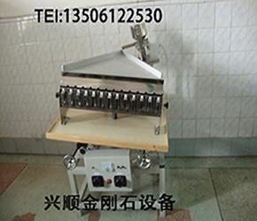
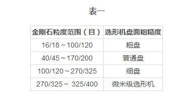
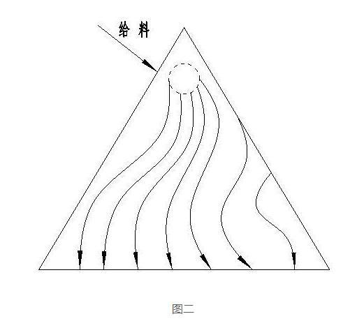
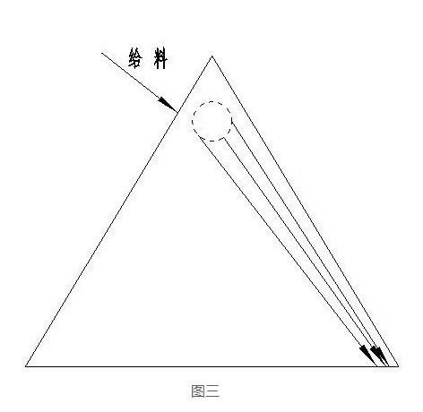
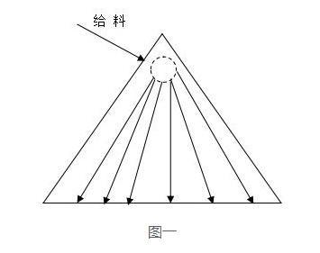
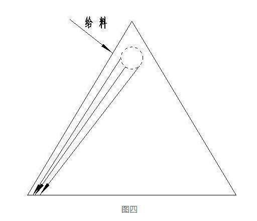

氧化锆珠的成型工艺及挑选方法
联系电话:13506122530
联系人:邓经理

国内金刚石生产企业和制品企业使用金刚石选形机对合成的金刚石物料进行选形到如今已有30多年的历史了。但是随着企业老技工的退休以及离岗者分流，加之新上马的企业的需求，熟练选形机操作的人员出现缺口。笔者作为多年选形机的研发者想通过本文向
一、采购选形机应注意的问题
用户在采购选形机时，应根据自身生产或使用的金刚石粒度的范围来购买相应盘面粗糙度的选形机。不然会在选型时造成选型效果不理想或不合格的现象。目前国内生产选形机的厂家都能提供粗、普通、细盘面的机型。笔者依据多年研发选形机的经验和从国内许多厂家几十年使用选形机收集到的信息，列出一个粒度范围与盘面粗糙度相关的建议表格供大家在采购选形机时参考。

二、操作选形机的几点要求
1、开箱检查
用户收到货物后，要求小心合理的打开包装箱取出设备，不要蛮干以免损坏设备。清理干净杂物，打开包装罩，这时千万注意不要用手去摸分选盘盘面，否则手上的汗液留存在分选盘上会影响分选效果。同时检查各紧固件是否有松动，然后将各部的电缆接头与控制箱联接牢固。并按说明书和装箱单检查所需配件是否齐全，详细阅读说明书后准备试车。
2、接线，通电检查
在详细阅读完说明书并对设备全面检查安装完成后接通电源，打开控制箱电源开关通电检查。看是否有漏电现象，地线是否接地，并慢慢旋转调压器旋钮，查看分选、给料振动是否正常，此时不得有异常响声。如一切正常将旋钮调至零位，关闭电源开关做选形前的调试准备。
3、选形前准备
开机前先将分选盘在y轴方向（即后角）调至与水平面5°，x轴方向调至8～10°的夹角，然后打开电源开关调整分选旋钮看到电流指针到达三分之一处，然后将筛分过的物料倒处料桶，先将分选旋钮缓慢调整到分选盘有明显的振动，此时缓慢调整给料旋钮观察给料情况。以下料端不堆料为基准开始选形调试。
4、选形操作的要点
⑴当物料在分选盘上开始运动时操作者要观察物料的运动轨迹。如果物料呈下滑状态时，则加大振动力同时降低x轴方向角度；如果上移则反之操作，直至所有物料呈散射平均态势。如图一所示。

⑵如感到下料速度慢，分选效率不够高，可以适当调高y轴方向的角度。太快时反之操作。
⑶当一切运作都正常时，操作者可使用小匙每斗接一些物料在玻璃片上镜检查看各料斗的物料，与行业标准的要求是否一致？如一致则停机将所接的全部物料收集后重新倒入给料斗中重新启动电源按操作步骤开始选形工作。如镜检结果达不到标准要求时则继续对角度、振动力进行调整直到满意的效果后再进行正常选形工作。
⑷当物料在盘上走S型路线时，则表示设备出现故障。（见图二）需停机对整机各部进行检查判断处理，或请厂家维修人员来进行维修。下面是常见故障的现象及处理方法。

5、常见故障的现象及处理方法
⑴物料在盘上运动轨迹正常，但镜检结果达不到分选标准要求。
原因：使用的分选盘的粗糙度与物料的粗细度不匹配。
解决的方法：按厂家的标准更换合适相关粒度要求的分选盘，或更换整机。
⑵物料集中向分选盘上部行走，料分散不开。如图三所示。
原因：一是振动力太大；二是x轴方向的分选角度太低。
解决的方法：调整分选旋钮使振动力逐步降低同时将x轴方向角度逐步提高，观察物料的运动轨迹直至物料在盘上全部呈射线状散开。


⑶物料集中向分选盘下部行走，料分散不开。如图四所示
原因：振动力太小，x轴方向角度升得太高。
解决的方法：按第二条解决方案反向操作。
⑷一直工作正常的设备，最近开始物料选不干净，在盘上运动时可看到物料运动会突然下滑或拐弯。
原因：分选盘使用过久，盘面粗糙度已被磨损。
解决的方法：将分选盘拆下送回生产厂家重新喷砂处理后再重新安装使用。
⑸物料在分选盘上走S型轨迹。
原因：一是隔振橡胶柱老化；二是紧固件因长久振动出现松动。
解决的方法：一是更换隔振橡胶柱；二是检查所有紧固件找出松动的螺栓将其重新紧固。如果上述处理还不行，则请生产厂家派员进行维修。
⑹调整振动力大小时电磁铁发出巨大的响声，分选无法进行。
原因：电磁铁与衔铁之间的间隙过小或不平行。
解决的方法：将电磁铁罩打开，重新调整间隙。建议间隙宽度在3毫米左右适合，并注意平行，不要一头大一头小否则会影响分选效果。
三、结束语：
上面对金刚石选形机使用过程出现的问题分析及选购时的建议是由于广华、齐飞、樊帆几十年研发选型机的一些经验和售后服务中常遇到的情况，希望能给磨友们在购买和使用选型机的时候提供方便。